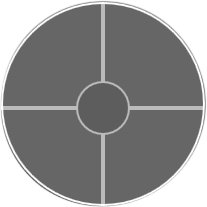
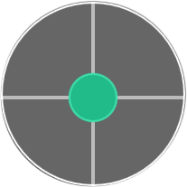
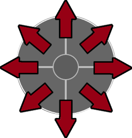
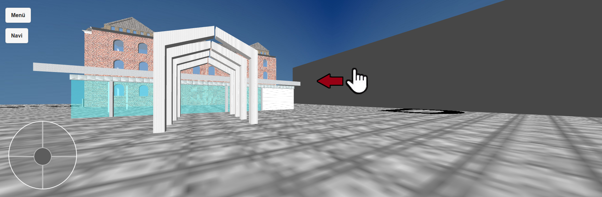

Menü
Bedienungsanleitung

Damit Sie sich frei auf dem Campus bewegen können,
benutzen Sie zum bewegen dieses Steuerkreuz (Abbildung 1.01).
Abbildung 1.01

Auf diesem Steuerkreuz befindet sich ein Joystick (Abbildung 1.02).
Abbildung 1.02

Um sich auf dem Campus fortzubewegen, müssen sie auf dem Steuerungskreuz unten links am Bildschirmrand
den Joystick (Abbildung 1.03) gedrückt halten und in die entsprechende Richtung bewegen.
Abbildung 1.03

Um die Richtung der Sichtweise zu ändern, hält man den Bildschirm mit dem Maus-Cursor
gedrückt und zieht in die entgegengesetzte Richtung,
in der die Sichtweise gedreht werden soll. Auf diesem Bild wird die Sichtweise nach
rechts gedreht, also muss man nach links ziehen. Ändert man die Sichtweise hingegen
nach links, so zieht man nach rechts.
Sie können auch problemlos Gebäude, sowie dessen Räume betreten,
indem Sie auf eine Tür zugehen, und diese einfach durchlaufen. Betretbare Türen erkennt man da dran, dass
sie leicht geöffnet sind.
Das Menü kann aufgerufen werden, wenn auf dem Menü-Button oben links im Bildschirmrand
Angeklickt wird.
Im Menü kommen Sie auf die entsprechende Seite, sobald Sie einen Button anklicken.
Im Menü ist ein Online-Status vorhanden, an dem Sie erkennen können,
ob Sie im Campus-Viewer als Benutzer angemeldet sind. Das Symbol leuchtet grün,
sobald man als Benutzer im Campus-Viewer eingeloggt ist, falls nicht, dann ist das Symbol rot.
Der Online-Status ist neben dem Symbol nochmal beschriftet.
Schilder anklicken
Man hat die Möglichkeit im Campus Viewer Schilder anzuklicken, um bestimmte Ereignisse aufzurufen,
z.B. Pop-up-Fenster für Stundenpläne.
Registration und Login
Wenn Sie sich als Benutzer registrieren wollen, so müssen Sie im Menü auf „Registration“ klicken,
anschließend erscheint eine Seite mit Formularen. Geben Sie in die Formulare dann ihre Daten ein und
klicken Sie dann auf „Absenden“. Um die Formulare zu entleeren, klicken Sie auf „Zurückversetzen“.
Zur Registrierung werden Ihre persönlichen Daten auf unserer Datenbank gespeichert und dürfen nicht
an Dritte weitergegeben werden.
Zum Einloggen klicken Sie im Menü auf „Login“ und geben Sie Ihren Benutzernamen und Ihr Passwort ein.
Sollten Sie sich mit diesen Daten im Campus-Viewer registriert haben,
dann sind Sie jetzt eingeloggt. Um sich wieder abmelden zu können, klicken Sie im Menü auf „Logout“
und bestätigen Sie mit „Ok“.
Kommentarfunktion
Für registrierte Benutzer des Campus-Viewers besteht die Möglichkeit Kommentare im Raum zu schreiben.
Um einen Kommentar zu schreiben, muss man im Raum auf dem „Kommentare“-Button klicken, anschließend
öffnet sich ein Menü mit einer Eingabezeile und vier weiteren Buttons.
Mit dem Button „Posten“ kann der Kommentar, der in der Eingabezeile geschrieben wurde,
als Kommentar gespeichert werden. Mit „Vorschau“ kann man sich den Kommentar nochmal ansehen,
bevor man ihn verschicken möchte. Dazu wird ein Fenster über der Eingabezeile angezeigt mit dem
geschriebenen Kommentar.
Durch den Button „Löschen“ werden sowohl Eingabezeile, als auch das Vorschaufenster geleert.
Zusätzlich wird das Vorschaufenster ausgeblendet.
Klicken Sie auf dem Button „Kommentare anzeigen“, dann öffnet sich ein neues Menü,
auf dem die bereits geschriebenen Kommentare angezeigt werden.